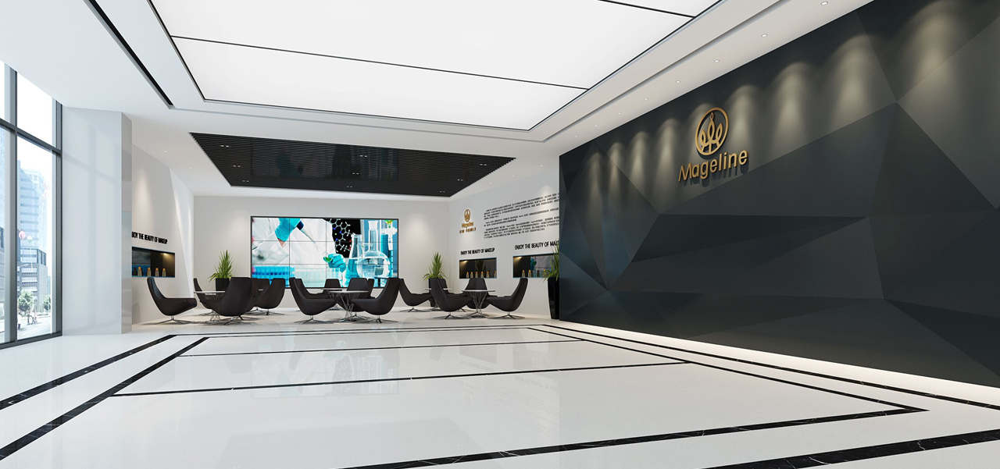
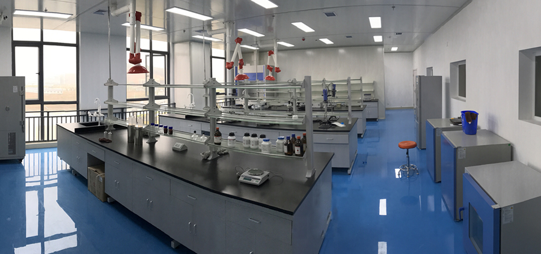
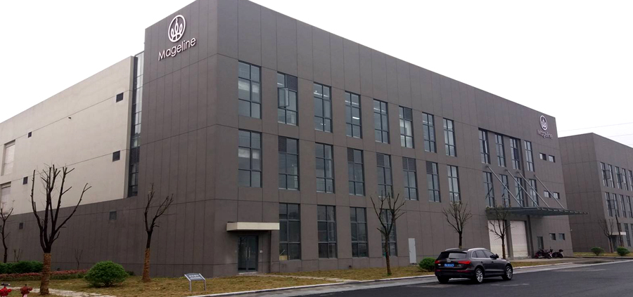

【品牌简介】
Mageline麦吉丽是国内高端化妆品品牌，倡导“尽享素颜之美”的护肤理念。公司集研发、生产、策划、销售为一体，在中国、美国拥有独立研发生产基地。将天然植物奢华成分与科技结合，创造出高端护肤精品。旗下五十多款产品涵盖护肤、面膜、彩妆、美容饮品等方面，因其天然、安全、有效的良好口碑，深受众多明星名人及爱美女性青睐。品牌创立至今，见证万千女性的美丽蜕变！

【品牌理念】
Mageline麦吉丽坚持专业、完美、高雅的品牌定位，旨在通过麦吉丽产品解决广大女性的肌肤问题，让每一位女性重拾素颜之美的自信，如花朵般真实、美丽、绽放。坚持展现真我，散发自信光彩，不懈追求美丽，掌握人生命运！
Mageline倡导女性在面对肌肤问题时，不再是用浓厚的彩妆去遮盖，而是敢于直视并积极有效的解决，重塑健康自然的素颜肌肤状态，这不仅是自我肌肤的保养态度，更是一种精致美丽的人生哲学！
【研发生产】
麦吉丽国际化妆品有限公司在美国拥有独立的科学实验室。汇集国际化妆品研究领域的各类人才，结合生物学、化学、皮肤学和营养学等多种领域技术，创作出一系列针对亚洲女性肌肤适用的口碑产品。湖北省吉美化妆品有限公司是麦吉丽品牌的专业生产企业，确保产品品质和供需。两家公司是麦吉丽品牌生产和研发核心关键的双助力。

工厂采用10万级洁净无尘灌装车间，所有产品配方遵循标准规范，从产品的研发、实验、生产都严格按照国家相关法律规定执行，并经国家卫生部等相关部门批准、备案，所有的临床实验必须经过批准，确保安全有效。麦吉丽产品原料健康、环保、天然, 对肤质的养护效果尤为突出。

品牌概述
麦吉丽Mageline是国内高端化妆品品牌，倡导女性“尽享素颜之美”的护肤理念。旗下50多款产品涵盖护肤、面膜、美容果饮及彩妆。麦吉丽在百货商场、电子商务、社交电商等渠道全面发展，已成为国内全渠道营销迅速发展的代表性企业。全国线下百货专柜达到500多家，线上店铺2000多家，覆盖3000多万高端女性用户。年销售总额以2倍增长比逐年递增。
2017年6月18日，麦吉丽正式成为浙江卫视《中国新歌声》战略合作伙伴[3]。
2017年11月15日，麦吉丽成为江苏卫视《2018跨年演唱会》战略合作伙伴。
2017年5月，麦吉丽再度携手浙江卫视，成为《奔跑吧》指定护肤品。
企业介绍
麦吉丽Mageline总部位于湖北武汉。公司集研发、生产、策划销售为一体，在中国、美国拥有独立研发生产基地。总公司为湖北省麦吉丽生物科技有限公司,拥有美国麦吉丽国际化妆品有限公司和湖北省吉美化妆品有限公司两家子公司。
麦吉丽汇集国际化妆品研究领域的人才，结合生物学、医药学、化学、皮肤学和营养学等多种领域先进技术，创作了一系列针对亚洲女性肌肤适用的口碑产品。
旗下产品
素颜三部曲
麦吉丽平衡水、麦吉丽青春浓缩精华素、麦吉丽贵妇美颜膏
护肤系列
基础护肤
花漾活肤卸妆水、臻致净透洁面膏、精灵眼霜、苹果干修护精华液、胶原蛋白拍拍乳、臻致莹润面霜、丰盈玲珑精华露、清透隔离防护乳、清透雪肌防护喷雾
问题肌肤修复
基因修复啫喱、草本祛痘膏、净肤雪颜晚霜、魔力祛黑头水
面膜系列
魔力焕颜蚕丝面膜、黄糖活效洁肤面膜、红茶薰衣草面膜、生物质石墨烯面膜（国家发明专利号：ZL 2015 1 0096254.2）
美容果饮
胶原蛋白果味饮、红石榴多莓果味饮
彩妆
水润无瑕气垫BB霜、樱花水润唇膏、4D约会睫毛膏、麦吉丽丝绒哑光口红、麦吉丽四色立体腮红、麦吉丽轻盈柔光蜜粉、麦吉丽高光卧蚕笔、麦吉丽塑形双头眉笔、麦吉丽塑形流畅眼线笔、麦吉丽流光眼影、麦吉丽绵柔丝滑唇釉
品牌理念
麦吉丽是倡导“尽享素颜之美”护肤理念的品牌，坚持专业、完美、国际、高雅的品牌定位。自创始以来，定位中高端女性护肤市场，致力于打造民族高端化妆品品牌.
品牌代言人（王丽坤 郑恺 尹恩惠 马苏 景甜）
2016年6月，郑恺成为麦吉丽面膜系列代言人。
2016年9月，麦吉丽启动双星代言计划，邀请国际影视演员尹恩惠成为麦吉丽品牌代言人。
2017年5月，马苏代言麦吉丽。
2018年2月，景甜成为麦吉丽胶原蛋白果味饮代言人
2018年9月，王丽坤成为麦吉丽全新品牌代言人
品牌发展
2014年 麦吉丽品牌创立，产品全面上线，麦吉丽总公司落户湖北武汉
2015年 实体专柜落户武汉新世界百货及汉街万达广场.
2015年 微博话题#素颜赞队#引起3亿人阅读参与，陆毅、柳岩、李小璐、李湘、马苏、叶一茜、杨蓉、汪东城、谢楠、杜海涛、秦岚、张馨予、陈伟霆、金晨、陈冰等众多明星相继推荐麦吉丽明星产品[16]
2016年 投资总额上亿元，在湖北宜昌成立湖北省吉美化妆品有限公司作为麦吉丽品牌的生产研发中心,于 2016 年 4 月成立,位于宜昌市兰台科技园。
2016年 在美国成立美国麦吉丽国际化妆品有限公司，联合知名大学及研究室成立海外研发中心。
2016年10月 麦吉丽万人年会暨代言人发布会盛大举行，面膜系列代言人郑恺、动力火车、彭佳慧助阵
2017年3月 微博#素颜赞队#话题内，刘嘉玲、何洁、李湘、袁咏仪等众多明星相继推荐麦吉丽明星产品素颜三部曲
2017年5月 麦吉丽作为国内高端化妆品的领军品牌，携手上海CBE（第二十二届中国美容博览会），积极促进行业信息交流，共同推进中国品牌的发展。
2017年6月 麦吉丽品牌三周年庆典隆重举行，品牌代言人马苏出席，特邀嘉宾张信哲、光良、谢楠、张瀚一助阵
2017年6月 麦吉丽品牌正式宣布成为浙江卫视《中国新歌声》战略合作伙伴，未来将深度合作，实现“台网联动”营销
2017年9月 麦吉丽以800㎡最大展位面积亮相第47届中国国际美博会
2017年11月 麦吉丽成为江苏卫视《2018跨年演唱会》战略合作伙伴
2018年1月 麦吉丽年会盛典暨新品战略发布会举行，品牌形象代言人马苏，邓紫棋、汪东城、陈楚生、华少等助阵
2018年1月 麦吉丽再次与浙江卫视合作，宣布成为浙江卫视《奔跑吧》战略合作伙伴
2018年3月 微博#肌肤年轻力#话题内，董璇、秦岚、唐艺昕、包文婧等明星推荐麦吉丽美容果饮产品胶原蛋白果味饮
2018年5月 麦吉丽品牌四周年盛典暨新品战略发布会举行，品牌形象代言人尹恩惠，尼克胡哲、张韶涵、杨培安、百克力、张杨果而等助阵
2018年5月 麦吉丽联合华中科技大学成立美容健康技术联合研发中心
2018年5月 麦吉丽亮向上海美博会
2018年6月 麦吉丽独家总冠名腾讯视频2018年度热剧《扶摇》
2018年8月 麦吉丽成为爱奇艺2081年度热播网络剧《延禧攻略》指定护肤品
品牌荣誉
2014年 加入湖北省美容化妆品业商会商会，荣获湖北省美容化妆品业商会理事单位.
2015年 《美丽俏佳人》倾情推荐麦吉丽素颜三部曲
2016年 荣获新浪互联盛典“年度优秀整合营销奖”<br>
2016年 获得“百度信誉金牌商户”称号
2016年 麦吉丽受邀参加第三届中国行业影响力品牌峰会电视颁奖盛典，并获“化妆品行业影响力品牌奖”
2016年 麦吉丽作为中国企业代表参加国际化妆品化学家学会联盟（IFSCC）会议
2016年 麦吉丽明星产品素颜三部曲获得爱丽美妆大奖【人气组合大奖】
2018年 麦吉丽胶原蛋白果味饮获得瑞士日内瓦国际发明展发明金奖
2018年 麦吉丽获得2018中国美妆社交电商T20品牌
2018年 麦吉丽红石榴多莓果味饮品获得2018年第32届「日本东京创新天才发明展」金牌及特别奖
科研力量
科研实力 Mageline在美国成立子公司：麦吉丽国际化妆品有限公司 ，并建立了独立的科学实验室，联合加州大学、斯坦福大学等国际化妆品研究领域的科学家，为Mageline品牌提供科技研发配方，致力于打造高端女性消费群体，结合生物学、医药学、化学、皮肤学和营养学等多重领域先进技术，针对现代中国的环境及主流人群肤质分类研究创造了一系列针对亚洲女性肌肤适用的护肤品。麦吉丽联合华中科技大学成立美容健康技术联合研发中心，引进国际顶尖的设备和研发人才。
麦吉丽生物质石墨烯面膜系列为专利技术，全球首创，其以天然玉米芯为原料，采用自主专利技术—基团配位组装析碳法（国家发明专利号：ZL 2015 1 0096254.2）制备而成。是以生物质纤维素为原料生产的具有石墨烯结构的微片，将高科技与天然材料的完美结合。
国际化工厂
Mageline（麦吉丽）为国家食品药品监督管理局备案品牌，麦吉丽国际化妆品有限公司公司拥有先进的生产设备和生产环境，灌装设备应用气动装置，实现无接触、无菌操作，并经国家卫生部等相关部门批准、备案，所有的临床实验必须经过批准。产品自原材料进厂至成品出厂，整个生产过程最多要经过100多道检测，生产过程全自动，避免人体接触及异物污染。生产车间采用药品生产的洁净标准，每4小时进行一次空气质量测试。产品必须经过过敏测试后才能上市销售，确保安全有效，健康、环保、纯天然，对肤质的养护效果尤为突出。
麦吉丽公益
麦吉丽慈善大事记
2015麦吉丽公益基金成立
2015年12月，麦吉丽年度盛典晚会现场，香港男歌手、演员陈小春亲自演出帮助筹集爱心善款[5] 。由陈小春签名的三个护肤套盒，共拍卖筹得善款19400元。同时成立麦吉丽公益基金，首笔启动基金10万元，从2016年开始，每卖出一套麦吉丽三部曲产品，公司就会捐助三块钱，帮助贫困地区建10所爱心小学。
2016思源•芭莎贫困县(乡)救护车项目
2016年9月，时尚芭莎慈善之夜，麦吉丽品牌董事长郭总为爱助力，为思源•芭莎贫困县(乡)救护车项目现场捐赠70w元爱心车队，与众多捐款明星一同合影留念。
2017关爱留守儿童：北斗关爱新行动
2017年5月，“北斗关爱新行动”---关爱留守儿童公益项目正式启动。麦吉丽作为爱心企业于启动仪式现场捐助善款200万元，只为帮助更多留守儿童。
< 返回